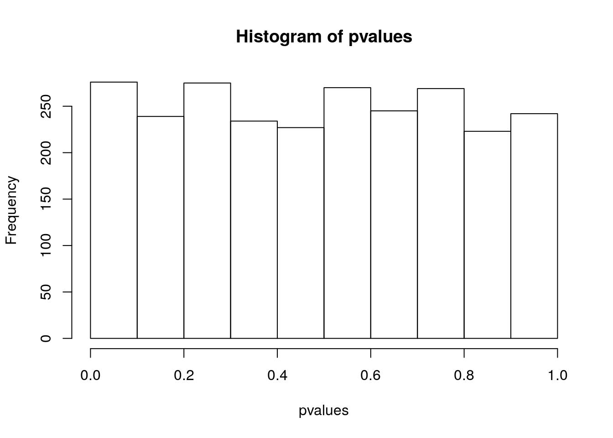

Lecture 7 Multiple comparisons
What if we were to produce several samples? E.g., measure difference between males and females reflectance in birds at several locations? Suppose that in fact the reflectance is the same for male and female (\(\mu_1 = \mu_2 = 1\)), that for each location we capture and measure 10 males and 10 females, and that we repeat this across 2500 locations.
First, let’s write a little function that returns the p-values for the t-test
get_p_value_t_test <- function(my_sample){
test_results <- t.test(my_sample$sample1,
my_sample$sample2,
var.equal = TRUE)
return(test_results$p.value)
}and now simulate the data:
How many times do we detect a “significant difference in reflectance” when setting \(\alpha = 0.05\) (even though we know that males and females are sampled from the same distribution)?
## [1] 129You should get a number of “significant” tests that is about \(2500 \cdot 0.05 = 125\). In fact, the distribution of p-values when the data are sampled from the null hypothesis is approximately uniform:

This means that when you are performing multiple tests, some will turn out to find “significant” differences even when there are none. Again, this is better summarized by xkcd:

xkcd on multiple comparisons
Exercise: what happens to the distribution of p-values if the means are quite different (e.g., \(\mu_1 = 1\), \(\mu_2 = 0.9\))?
7.1 Corrections for multiple comparisons
The main approach to deal with the problem of multiple comparisons is to adjust the p-values. For example, in Bonferroni correction one consider as significant test results whose associated p-value is \(\leq \alpha / n\), where \(n\) is the number of tests performed (equivalently, redefine the p-values as \(p' = \min(p n, 1)\). Clearly, this correction becomes overly conservative when the number of tests is large. For example, in biology:
Gene expression In a typical microarray experiment, we contrast the differential expression of tens of thousands of genes in treatment and control tissues.
GWAS In Genomewide Association Studies we want to find SNPs associated with a given phenotype. It is common to test tens of thousands or even millions of SNPs for signficant associations.
Identifying binding sites Identifying candidate binding sites for a transcriptional regulator requires scanning the whole genome, yielding tens of millions of tests.
The funniest example of this problem is the fMRI of the dead salmon: a dead salmon “was shown a series of photographs depicting human individuals in social situations with a specified emotional valence. The salmon was asked to determine what emotion the individual in the photo must have been experiencing.” The researchers showed that if multiple comparisons were not accounted for, one would detect a cluster of active voxels in the brain, with a cluster-level significance of p = 0.001.
The widespread use of GWAS and other techniques that are trying to find a needle in a haystack led to the development of many interesting techniques. Here an interesting account.
Adjusting p-values in R:
## [1] 0.04 0.28 0.40 1.00